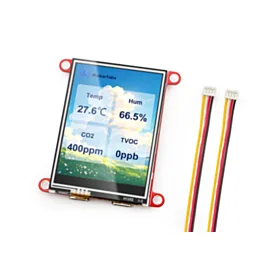

MaTouch Lite ESP32-S3 SPI Resistive Touch 2.4" ST7789
Makerfabs
MaTouch Lite ESP32-S3 SPI Resistive Touch 2.4" ST7789 is a 2.4" 320x240 Resistive touch ESP32 display board by Makerfabs based on the ESP32-S3 with 16MB flash, 8MB PSRAM.
Features, ports & interfaces
- Resistive touch
- 8 MB PSRAM
- 16 MB flash
- Lithium battery support
Specifications
| Parameter | Value | Source |
|---|---|---|
| Screen size | 2.4" | source |
| Resolution | 320x240 | source |
| Shape | Rectangular | |
| Touch | Resistive | source |
| MCU / SoC | ESP32-S3 controller 16M flash, 8M PSRAM; | source |
| MCU family | ESP32-S3 | source |
| Flash | 16MB | source |
| PSRAM | 8MB | source |
| USB | 1 * USB_native, 1 *USB-to-UART | source |
| Category | Makerfabs MaTouch | |
| Display | 2.4", 320x240 resolution , driver ST7789V2, SPI interface | source |
| Power consumption | USB Type-C 5.0V(4.0V~5.25V); 3.7V Lipo battery | source |
| Vendor | Makerfabs |
Official links & documentation
Notes
- Auto-added by the monthly scraper on 2026-11-24 from the official product page; values are copied verbatim from that page, fields it does not state are empty. Not yet hand-reviewed.